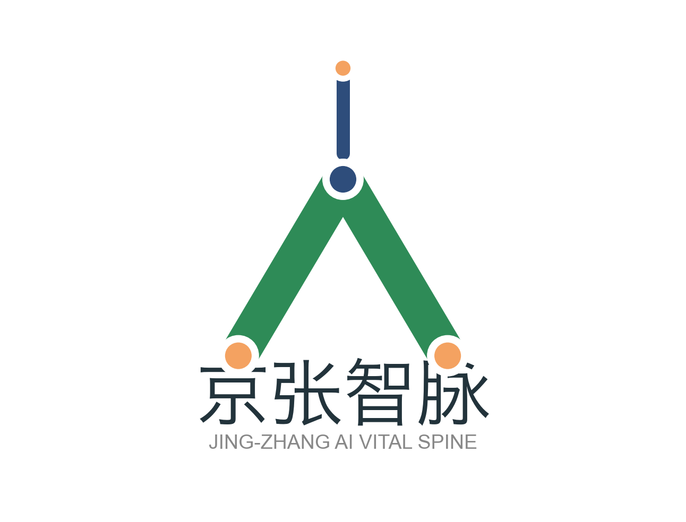
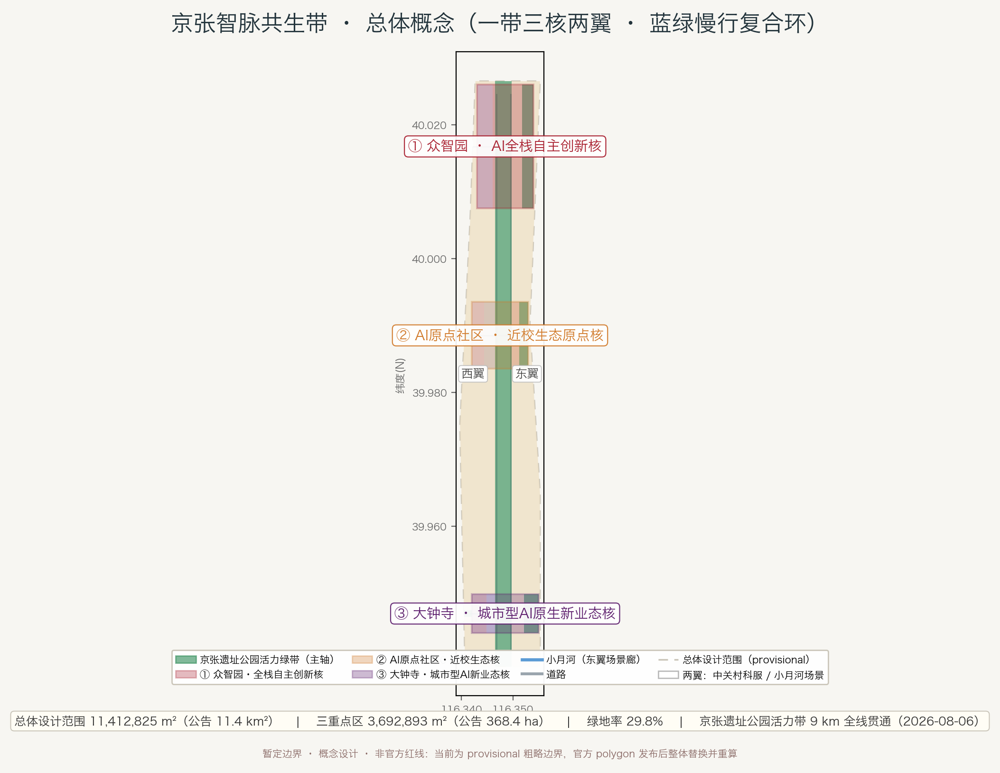
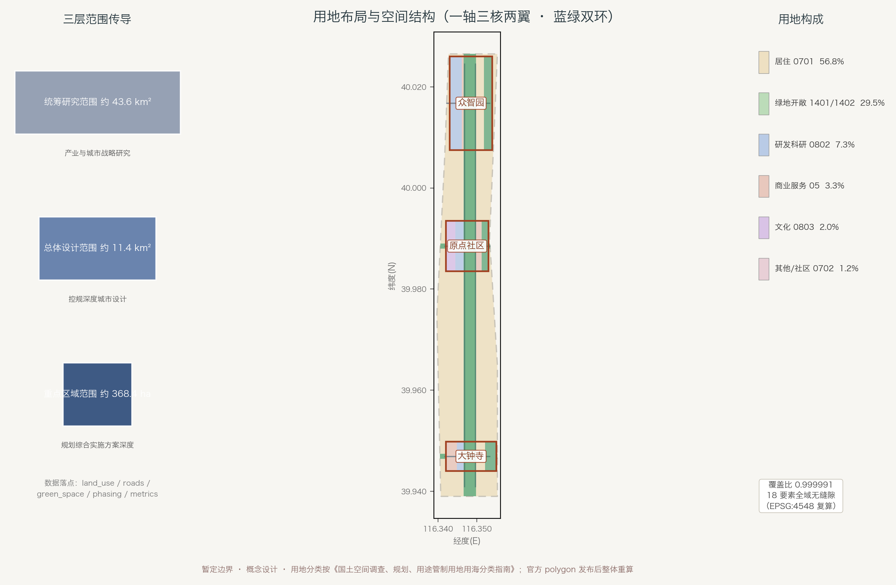
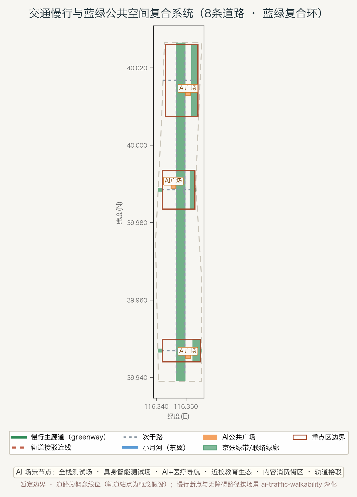
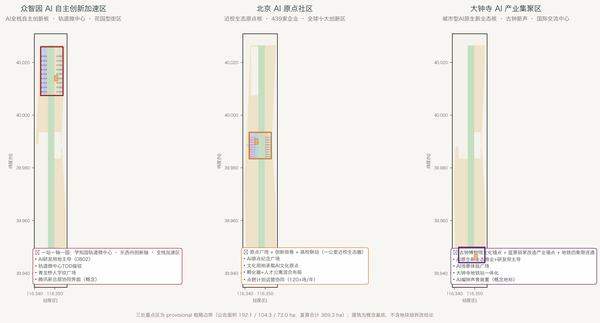
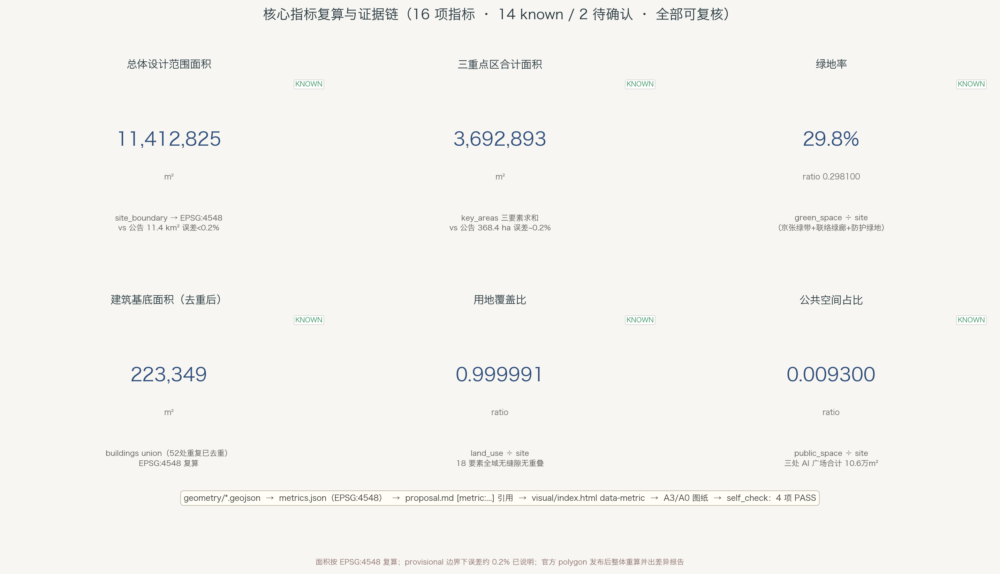

| 层级 | 官方面积 | 本方案工作 | 设计深度 |
|---|---|---|---|
| 统筹研究范围 | 约 43.6 km² | 世界级AI创新生态、三区两翼协同、命名与视觉识别、未来城市形态 | 产业与城市战略研究 |
| 总体设计范围 | 约 11.4 km² | 京张绿带活力轴、用地结构、交通市政、蓝绿慢行环、风貌控制 | 控规深度城市设计 |
| 重点区域范围 | 约 368.4 ha | 众智园 / AI原点社区 / 大钟寺 详细设计 | 规划综合实施方案深度 |
AI全栈自主创新核。锚点：中关村东升科技园众智园（原学北园），2026年7月具备开园条件；昌平线学知园站轨道微中心地下连通；西侧在建腾讯北京新总部（官方报道）。
近校生态原点核。五道口原点大厦为起点，辐射约3km²；集聚439家企业、全年活动120余场，入选首批"全球十大创新区"。
城市型AI原生新业态核。锚点：大钟寺古钟博物馆（1733年觉生寺）+ 蓝景丽家改造"国际交流中心"（市级指标支持城市更新，新增建筑约13569.98m²）。
| 项目 | 类型 | 位置 | 分期 |
|---|---|---|---|
| R1 众智园开园运营与片区协同 | 在建/运营 | 众智园 | 近期 |
| R2 原点社区点燃计划与广场点亮 | 更新/运营 | 原点社区 | 近期 |
| R3 蓝景丽家→国际交流中心 | 拆除重建（公示） | 大钟寺 | 近期 |
| R4 京张绿带AI导览与朝圣节点 | 新建（概念） | 京张绿带 | 近期 |
| R5 小月河滨水AI场景段 | 新建（概念） | 场景翼 | 中期 |
| R6 大钟寺地铁一体化与四象限连通 | 改造（概念） | 大钟寺 | 中期 |
| R7 AI人才公寓与智慧社区 | 新建（概念） | 三核周边 | 中期 |
| R8 全域风貌协调与向北延伸衔接 | 提升（概念） | 全域 | 远期 |
分期：近期“三核点亮”（2026-2028）→ 中期“绿带贯通”（2028-2030）→ 远期“全域智脉”（2030-2035，衔接遗址公园向北延伸）。以上均为概念建议，不表述为已确定的政府安排。
| # | 场景 | 空间落点 | 类型 |
|---|---|---|---|
| S1 | AI全栈加速测试场 | 众智园 | 产业测试 |
| S2 | 具身智能公共测试场 | 小月河场景翼 | 产业测试 |
| S3 | AI+医疗健康服务导航 | 小月河/原点社区 | 产业测试 |
| S4 | 近校AI+教育生态圈 | 原点社区 | AI+场景 |
| S5 | 智能体内容消费街区 | 大钟寺 | AI+场景 |
| S6 | 京张智脉AI导览与文化叙事 | 京张绿带 | AI+场景 |
| S7 | AI人才公寓智慧社区 | 三核周边 | AI+场景 |
| S8 | 轨道微中心智能接驳 | 众智园/大钟寺 | AI+场景 |
| S9 | AI政务与公共治理试点 | 原点社区 | AI+场景 |
| S10 | 开发者荣誉墙与AI朝圣节点 | 京张绿带三节点 | AI+场景 |
| 任务 | 状态 | 方案回应 |
|---|---|---|
| agent.1 一带总体概念与功能统筹 | 已覆盖 | 命名体系"京张智脉"、Logo方向（青龙桥"人"字形+轨与算复合格）、三区两翼协同 |
| agent.2 AI全栈体系与世界级生态 | 已覆盖 | 6个全球AI生态案例（Kendall Square、one-north、King's Cross等） |
| agent.3 AI+场景与智能化城市 | 已覆盖 | 10张场景卡（S1-S3为产业测试）、5类用户画像 |
| agent.4 公共空间、新业态与朝圣地标 | 已覆盖 | 3个AI朝圣地标（青龙桥人字纹广场、AI原点纪念碑、AI编钟声景装置） |
| agent.5 京张/中关村/AI文化叙事 | 已覆盖 | "三次自主创新"叙事（1909京张铁路→1980s中关村→2026 AI创新带） |
| agent.6 全球AI活动体系与长期运营 | 已覆盖 | 年度开发者大会、荣誉墙、场景开放运营（概念建议） |
| 公告 1.3 / 1.4 / 1.5（三层范围全部任务） | 已覆盖 | 生态体系/新型城市形态/高品质城区/命名logo/更新框架/交通市政/活力带/风貌/三重点区（逐条见 compliance_matrix.json） |
| 标准 | 状态 | 说明 |
|---|---|---|
| 项目资格预审公告 | addressed | 三层范围、全部必选任务覆盖 |
| 智能体开源征集任务书 | addressed | 六项agent任务在正文实际展开 |
| 城市设计管理办法 | addressed | 风貌、公共空间、建筑布局统筹 |
| 控规编制审批办法 | data_gap | 达到控规深度结构；FAR/高度等法定指标待官方控规条件 |
| 国土空间用地分类指南 | addressed | land_use 全部使用国标用地代码 |
| 建筑设计深度规定2016 | data_gap | 官方文件缺失，作深度参照登记 |
数据缺口（已如实登记）：官方边界 polygon、控规指标（容积率/高度/密度/退线）、道路红线、权属、市政管线、现状建筑底数。未被官方证实的说法一律未采用。
关键假设（assumptions.json）：①控规法定指标待官方确认（A-CONTROLS-001）；②边界为暂定、待官方多边形替换后复算（A-BOUNDARY-001）；③轨道接驳节点为概念假设（A-RAIL-001）；④建筑基底为概念设计、非法定拆改结论（A-BUILDING-001）；⑤全部AI场景/活动/投资为概念建议，非已确定政府安排（A-SCENARIO-001）。
数据缺口：官方边界 polygon、控规指标（容积率/高度/密度/退线）、道路红线、权属、市政管线、现状建筑底数。未被官方证实的说法一律未采用。
提交包类型：professional_design_package；提交状态：由 finalize 置为 ready_for_review；提交阶段：formal（兼容字段）。自检清单（BOUNDARY_TRUST / KEY_AREAS_TRUST / LAND_USE_TOPOLOGY / GEOMETRY_SCHEMA / METRICS_TRACE / PROPOSAL_EVIDENCE / FIGURES_PRESENT / VISUAL_STATIC / PACKAGE_FINALIZED / PR_AUTHOR_MATCH）逐项结果见 self_check.json。
本页面为离线静态版本：不加载任何 CDN、远程地图、外部脚本/字体、iframe、表单或追踪代码；全部图片为本地相对路径。